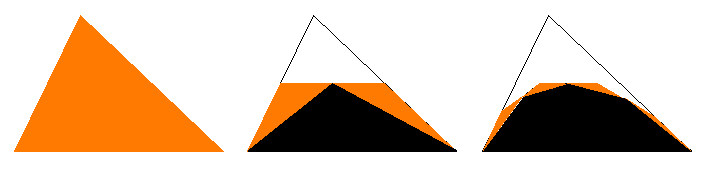

An easy way to get curved shapes is to implement the recursive algorithm that draws filled quadratic Bezier curves. Here's a picture to remind you how the recursive algorithm works; the black parts are filled in, the orange parts are the triangles on which you recur.

Remember that to get adjacent Bezier curves to connect into more complicated smooth curves, you need to make the last two control points of one curve line up with the first two control points of the next.